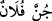

sahifelerin ve çeşitli ilâhi kitapların bulunduğu yerdir. Bu kitapların hepsi, etrafı
okyanuslarla kuşatılmış ve hakkında “biz o kitapta hiçbir şeyi eksik bırakmadık” (el-
En’am, 6/38) buyrulan kitaptan dağılmıştır. Bu kitap, bütün ilimleri ihtiva etmektedir.
Aynı ilimleri “nun” mürekkebi de şifre hâlinde içinde bulundurmaktadır. Bu kitap yüz on
dört sûreden oluşmaktadır. Nitekim “nun” o sûrelere uygun sayıyı ihtivâ etmektedir.
Çünkü o, iki nun bir vav ve bir elif’ten oluşmaktadır. Bu da nun ismini meydana
getirmektedir. Bu isim yüz on üç rakamını oluşturmakta, bu ismin delâlet ettiği tek nun
harfi de bu sayıyı on dörde tamamlayarak yüz on dört rakamı bulunmaktadır. Bu bilgi,
hassas bir bilgi olup başkalarının sözlerinde bunu bulmak çok nadirdir.
Kâşânî der ki: “Nun” nefs-i küllî, “el-kalem” akl-ı küllîdir. Birincisi kinâye babından
kelimenin ilk harfiyle yetinme şeklinde, ikincisi ise teşbih bâbındandır. Çünkü insanın
rûhunda aklî tesirle birlikte mevcûdâtın sûretleri nakış nakış canlanır. Tıpkı şekillerin
kalem vâsıtasıyla levh üzerinde nakış nakış canlandığı gibi. “Ma yesturûn” cümlesi ile
ilerde olacağı şekliyle kaderde belirlenmiş olan eşyânın sûretlerine, mâhiyetlerine,
ahvâline ve bunların yazılmasına işâret olunmaktadır. Bu cümlede fâil ise mutevassıt
akıl ve mukaddes ruhlardan olmak üzere bunları yazmakla görevli kâtiplerdir. Aslında
hakîkî kâtip yâni yazan Allah’tır. Fakat bu yazım işi isimlerin huzûrunda olduğu için
mecâzen isimlere nispet olunmuştur. Bu iki nesne ile bunlardan ortaya çıkan varlığın
başlangıcı, ilâhi takdirin biçimleri, onun emrinin başlangıcı ve Allah’ın gaybının
mahzeni üzerine yemin edilmiştir. Bu iki nesne üzerine yemin edilmesi bunların şerefli
olmaları, tesir ve teessür mertebesinin başında her varlığı ihtivâ etmelerinden ve
bunların üzerine yemin edilerek vurgulanılmak istenen gerçekle münâsebetlerinden
dolayıdır. Bu iki nesne üzerine yemin edilerek vurgulanan gerçek ise şimdi ikinci âyette
ifâde olunmaktadır.
2. Sen -Rabbinin nimeti sâyesinde- mecnûn değilsin.
Bu ifâde, yukarda geçen yeminin cevabıdır. “Bâ” harfi gizli bir fiile bağlıdır. O da
“mâ”’nın haberindeki zamirden hâldir. “Mâ”nın haberi ise “mecnûn” kelimesidir, âmili
ise olumsuzluk mânâsıdır.
Cünûn; nefis ile akıl arasındaki bir engeldir şeklinde târif edilebilir. Arapçada “
/cünne fulânun” şeklinde ifâde edilen cümle “filancaya delilik geldi”, “ona
delilik isâbet etti” veya “nefsiyle aklı arasına engel olundu da aklı böylece başından
gitti” denilir. Burada sanki şöyle denmektedir: Ey Muhammed! Delilik sende yoktur. Sen
Allah’ın nimeti olan “nübüvvet” ve genel riyâset yâni başkanlık nimetlerinden istifâde
etmiş olarak delilikten uzaksın. Bu ifâdelerle kasdedilen, Peygamber Efendimiz (s.a.)’in
deli şeklinde uğramış olduğu iftirâdan uzaklaştırılmasıdır. Müşrikler onu